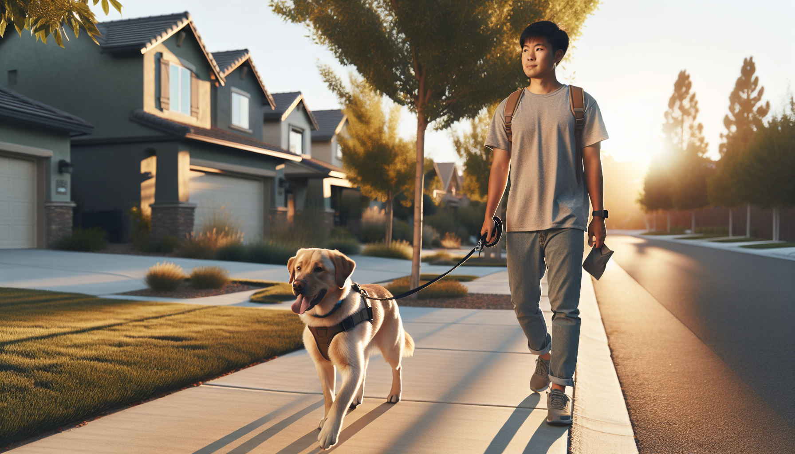

If your dog turns every walk into a tug-of-war, you are not alone. Leash pulling is one of the most common struggles dog owners face, especially with energetic puppies, newly adopted rescue dogs, and adolescent dogs discovering the world. The good news is that pulling is not a sign that your dog is stubborn, dominant, or trying to control you. In most cases, dogs pull because they are excited, because walking faster gets them where they want to go, or because they have never been clearly taught how to walk politely on a leash.
Learning how to stop your dog from pulling on the leash starts with understanding one simple truth: dogs repeat behaviors that work. If pulling gets your dog closer to a smell, a person, another dog, or simply forward motion, pulling has been rewarded. With the right training approach, you can teach your dog that a loose leash is what makes the walk continue.
In this guide, we will cover why dogs pull, the best equipment to use, and step-by-step leash training methods rooted in positive reinforcement and behavior science. Whether you are working with a brand-new puppy, an adult dog, or a rescue still adjusting to life with you, these strategies can help make walks calmer and more enjoyable for both of you.
Before you can fix leash pulling, it helps to know why it happens. Dogs naturally move faster than humans, and they explore the world with their nose and body. Walks are full of exciting sights, sounds, and scents. From your dog's perspective, moving toward those things is rewarding.
Here are the most common reasons dogs pull on the leash:
Forward motion is rewarding. If pulling gets your dog where they want to go, the behavior gets stronger.
Excitement and arousal. Walks are stimulating, especially for puppies and high-energy dogs.
Lack of training. Many dogs have never been taught what loose-leash walking means.
Stress or uncertainty. Some rescue dogs pull because they are anxious and trying to move away from something uncomfortable.
Breed tendencies. Sporting, herding, hound, and working breeds may naturally move with more intensity and purpose.
The key takeaway is this: your dog is not trying to be difficult. Pulling is simply a learned behavior that can be replaced with a better one.
Training matters most, but equipment can make the learning process easier and safer. The goal is not to force your dog into position, but to set both of you up for success.
Helpful equipment options include:
Front-clip harness: Often a great choice for dogs who pull because it helps reduce forward momentum without causing pain.
Standard flat collar: Fine for dogs who do not pull hard, but less ideal for active pullers because of pressure on the neck.
Fixed-length leash: A 4- to 6-foot leash usually works best for training.
Treat pouch: Keeps rewards easy to access so you can reinforce good behavior quickly.
Equipment to approach with caution includes choke chains, prong collars, and other aversive tools. These may suppress behavior temporarily, but they can increase stress, discomfort, and negative associations with walking. Science-backed, reward-based training builds lasting skills without those risks.
One of the biggest mistakes owners make is trying to teach leash manners in the most distracting environment possible. If your dog cannot focus in the living room or hallway, they are unlikely to succeed on a busy sidewalk.
Start in a quiet space indoors with your dog on leash. Have small, high-value treats ready.
Follow these steps:
Stand still with your dog next to you.
The moment the leash is loose, mark the behavior with a cheerful word like “yes” or a clicker and give a treat.
Take one step forward. If the leash stays loose, mark and reward again.
Gradually build to two steps, then three, then short stretches of walking.
Reward your dog for staying near you, checking in, and moving with you.
This teaches your dog that being close to you and keeping slack in the leash is what earns reinforcement. Keep sessions short, upbeat, and easy. A few minutes at a time is enough, especially for puppies.
The stop-and-go method is one of the most effective ways to stop leash pulling, but only if you are consistent. The rule is simple: pulling makes the walk stop, and a loose leash makes the walk continue.
Here is how to do it:
Begin walking at a normal pace.
If your dog pulls and puts tension on the leash, stop immediately.
Stand still and wait. Do not yank back or drag your dog toward you.
The moment your dog turns back, steps toward you, or creates slack in the leash, mark and reward.
Then move forward again.
This works because it changes the consequence of pulling. Instead of getting your dog closer to what they want, pulling now pauses access. Loose-leash behavior restarts the walk.
Be patient. At first, you may only get a few steps at a time. That is normal. Dogs learn through repetition and consistency. If every family member follows the same rule, progress comes faster.
Many owners focus so much on stopping pulling that they forget to actively teach what they do want. Reward-based training is not just about correcting mistakes by stopping movement. It is about reinforcing the right choices before your dog gets to the end of the leash.
On walks, reward your dog for:
Walking beside you with a loose leash
Looking back at you voluntarily
Matching your pace
Turning with you when you change direction
Choosing to disengage from distractions
You can also play the “check-in game.” Every time your dog looks at you during the walk, mark and reward. This builds attention and makes you more relevant than the environment.
For food-motivated dogs, tiny soft treats work well. For dogs who love movement, you can also use life rewards. For example, if your dog walks nicely toward a grassy patch they want to sniff, allow them to go sniff as the reward. Sniffing is enriching and can be a powerful reinforcer.
If your dog pulls most when they see squirrels, other dogs, or exciting people, the issue may be less about leash skills and more about arousal. In that case, training at the right distance is essential.
Try these management tips:
Choose lower-distraction routes while your dog is learning.
Walk at quieter times of day if your neighborhood is busy.
Create distance from triggers so your dog can still think and respond.
Practice in short sessions instead of expecting a perfect 30-minute walk right away.
Meet your dog's exercise needs with enrichment, play, training games, and sniff walks.
Remember that loose-leash walking is hard work for many dogs. It asks them to move slowly, stay regulated, and pay attention in a stimulating world. Progress is rarely linear. Some days will feel easier than others, especially with puppies and newly adopted dogs who are still adjusting.
Even with the best intentions, a few common mistakes can slow your progress.
Being inconsistent: If pulling works sometimes, your dog will keep trying it.
Moving too fast: Increase distractions gradually instead of jumping straight into busy environments.
Using punishment: Leash jerks and harsh corrections may create stress and reduce trust.
Expecting too much too soon: Puppies and rescues often need time to build focus and confidence.
Skipping rewards: If you stop reinforcing good walking too early, the behavior may weaken.
If your dog is reactive, fearful, or extremely strong on leash, working with a qualified positive reinforcement trainer can make a huge difference. Personalized coaching can help you address the root cause safely and effectively.
If you want to know how to stop your dog from pulling on the leash, the answer is not force. It is clarity, consistency, and reinforcement. Teach your dog what a loose leash means, reward the behavior you want, and make pulling less effective by calmly stopping forward movement. Over time, your dog learns that staying connected to you is what makes the walk fun.
For new puppy parents, rescue adopters, and dog owners of all experience levels, leash training can feel frustrating at first. But with patience and a science-backed plan, calmer walks are absolutely possible. Start in easy environments, celebrate small wins, and remember that every walk is a training opportunity.
Get our full Dog Training eBook series — new titles added weekly.